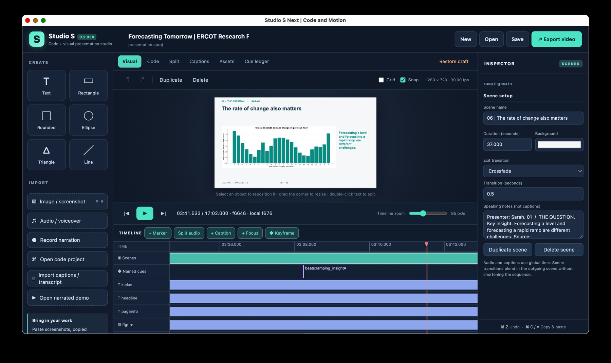

Personal project · Creative software
Studio S — Code-Driven Presentation Studio
I am developing a desktop presentation editor that coordinates code-defined scenes, visuals, narration, captions, and a shared timeline.
Start with the visuals ↓
THE QUESTION
Why this project?
I wanted presentations to behave more like editable software projects, with timing and visuals managed together.
These actual prototype screenshots show a scene inspector, named cues, multitrack timeline, and slide content drawn from our electricity forecasting project.
EVIDENCE, NOT DECORATION
Inside the working prototype.
Explore how the interface combines scene editing, synchronized tracks and a real ERCOT presentation scene.
What the work shows
The design centers on synchronized scenes and audio, with editable code and visual controls. AI-first orchestration remains a development objective.
My role
Independent software prototyping and interface design using Electron, JavaScript, and Canvas.
WHAT TO KEEP IN MIND
The screenshots show a working development checkpoint, not a finished commercial application. Advanced orchestration features remain on the roadmap.